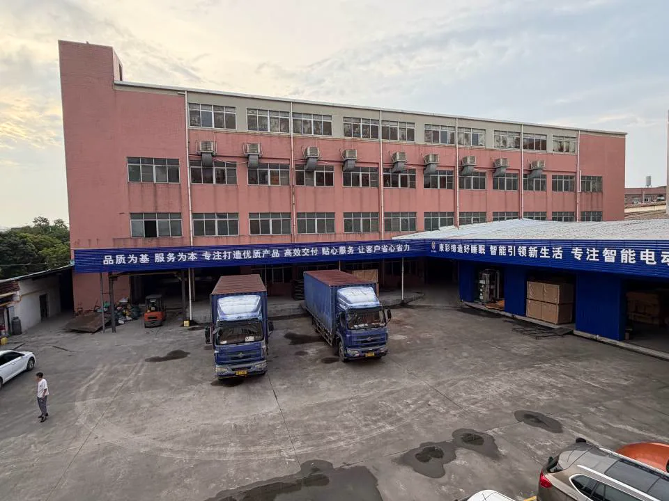
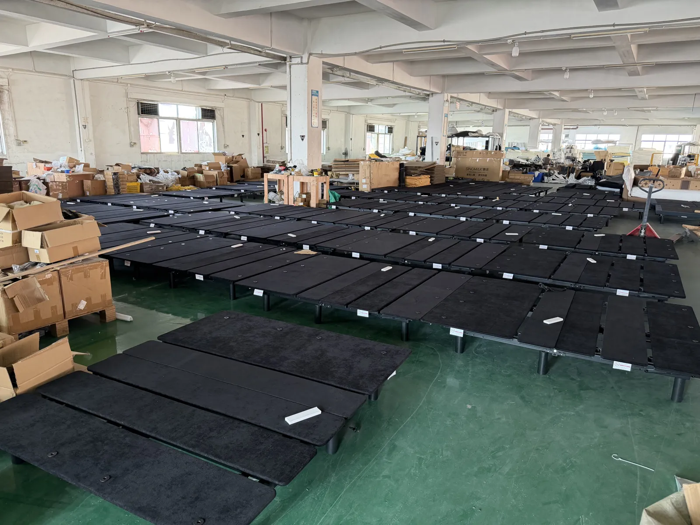
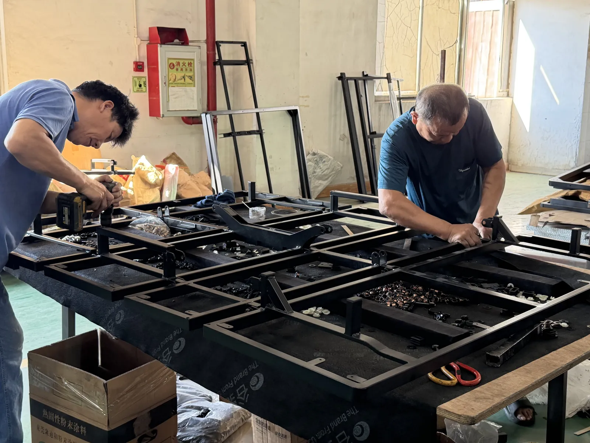
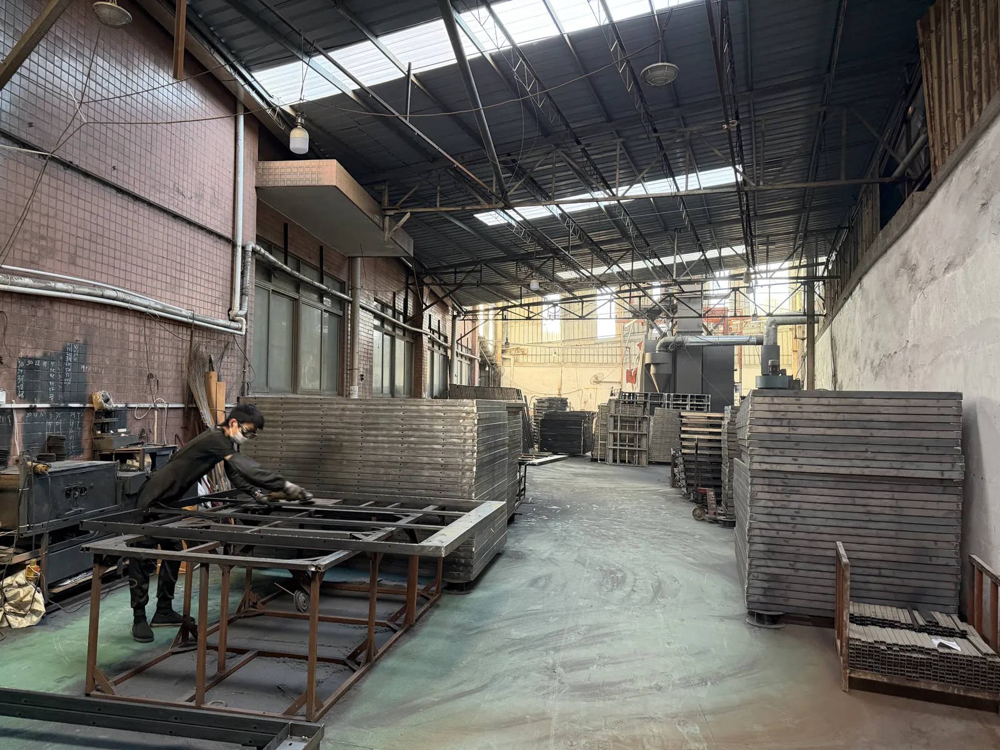
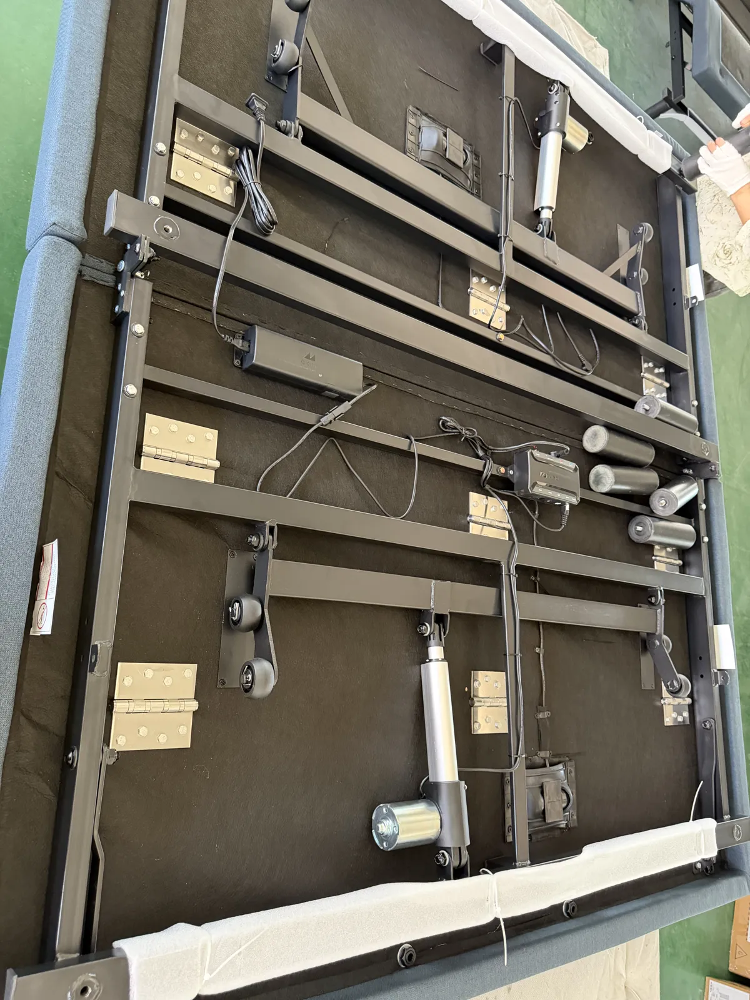
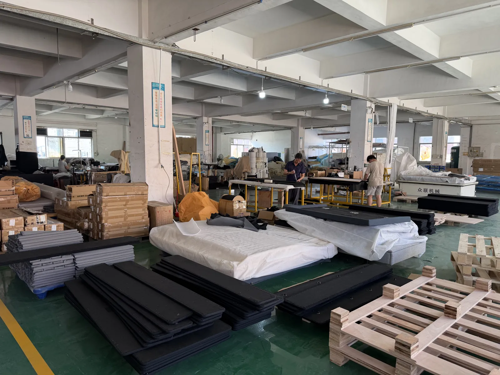
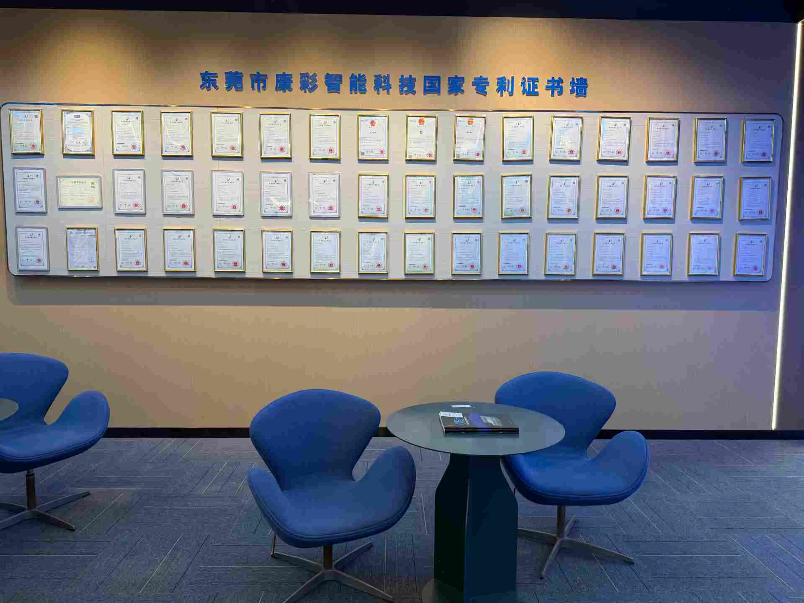
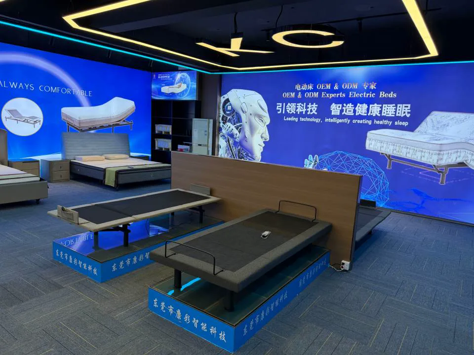

Dongguan, China
A real factory behind every product brief.
Kang Cai develops and manufactures adjustable sleep products for furniture brands, mattress companies, distributors and project buyers.
Who We Are
Engineering motion into everyday furniture.
Kang Cai Smart Sleep Co., Ltd. is based in Shatian Town, Dongguan—one of China’s established furniture manufacturing regions. Our work combines metal structures, motion mechanisms, upholstery and sleep-product assembly.
For B2B programs, we start with the commercial brief: who will buy the product, which market it will enter, which features matter and how it must ship. This keeps customization connected to practical production and procurement decisions.

Inside Kang Cai
The working floor, not a stock-photo factory.
These are current photographs from the Kang Cai facility, showing production volume, structural work and product assembly.



Factory in Motion
See the workshop at work.
Short clips from the Kang Cai workshop in Dongguan. Each video loads only when you press play.
On the Floor
More from the workshop.
Frames laid out in the hall, wrapped components, assembly at the bench and the underside of a finished frame.


Manufacturing Flow
From structure to shipment-ready product.
Exact controls vary by model and program. The process below shows the practical sequence used to move a product from frame preparation into finished assembly.
Metalwork & frame preparation
Structural components are prepared for the required product format and load path.
Mechanism & electrical integration
Motors, linkages, controls and cable routing are assembled according to the confirmed specification.
Upholstery & final assembly
Upholstered sections, frames and functional modules are combined into the finished configuration.

Inspection & packing preparation
Appearance, movement and order-specific details are checked before packing and shipment coordination.
Development Evidence
Product work you can verify.
Documentation depends on the specific model and destination market. Buyers can request relevant patent, test and compliance information during project review.

Patents & product development
The Dongguan showroom displays the company’s patent certificates. Availability and relevance are confirmed against the selected product.

Showroom & sample review
Buyers can compare product formats, motion structures and finished appearances before finalizing a program.
Build With Kang Cai
Bring the market brief. We’ll map the product route.
Share the category, quantity, destination and required functions to start a practical OEM/ODM discussion.